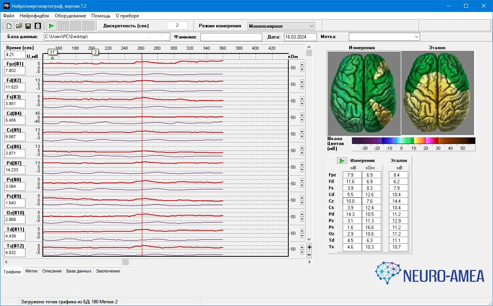
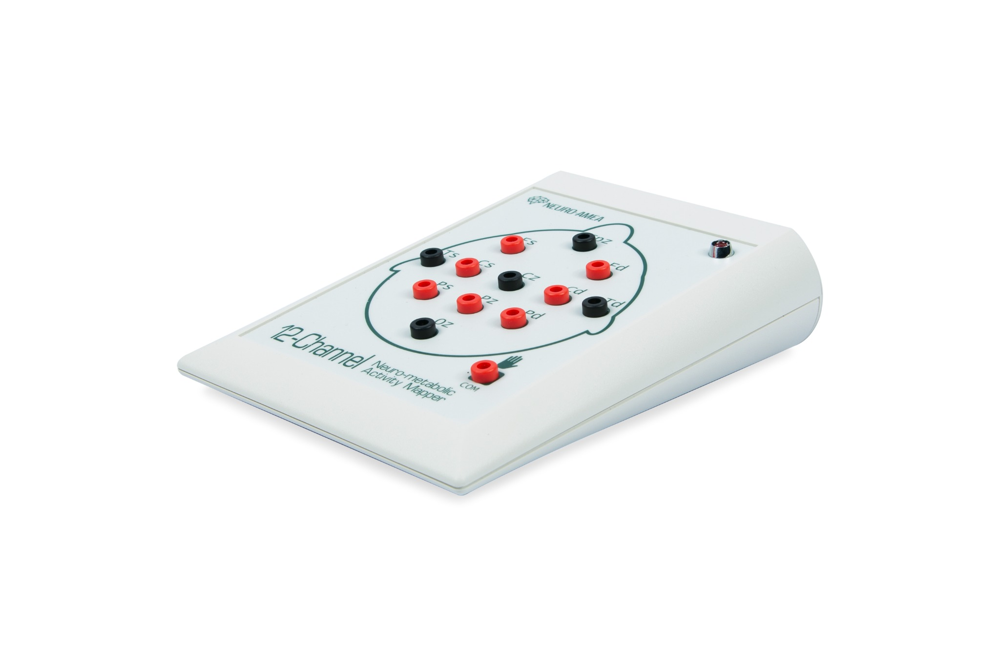

Position sensors according to methodology.
Neurophysiological assessment system
Objective data
Another layer for clinical practice
Neuro-Amea records DC potentials from defined scalp locations and presents the results visually for specialist review.
5recording channels
DCpotential measurement
01integrated workflow
NON-INVASIVESTRUCTURED RECORDINGVISUAL OUTPUTPROFESSIONAL INTERPRETATION
02 / WHY IT MATTERS
Add physiological context
to the information you already use
Neuro-Amea complements established assessment by adding physiological measurements to clinical observation and standardized methods.
01Clinical
ObservationHistory · signs · context
ObservationHistory · signs · context
+
02Standardized
AssessmentTests · scales · performance
AssessmentTests · scales · performance
+
03Neurophysiological
DataRecorded DC potentials
DataRecorded DC potentials
↓
PROFESSIONAL INTERPRETATIONMore context.
Not a replacement.
Not a replacement.
03 / REAL OUTPUT
See what the
system produces
A real example from Neuro-Amea materials showing how recorded measurements are presented for review.
Visual mapsNumerical indicatorsStructured results
NEURO—AMEA / EXAMPLE OUTPUTREAL MATERIAL

REAL OUTPUTOPEN ↗Example output from Neuro-Amea materials · click to enlarge.
04 / HOW IT WORKS
From signal
to specialist review
A five-step workflow from sensor placement to results ready for specialist review.
Record DC potentials through five channels.
Process measurements in the software.
Review maps, numerical indicators and session results.
Consider results in professional context.
06 / APPLICATIONS
Choose your
professional context
Start with your field. Each section shows where Neuro-Amea can add physiological measurements to existing practice.
01
Neuropsychology
Add physiological measurements to cognitive and behavioral assessment.
Explore ↗02Neurology
Review additional physiological measurements within a broader neurological context.
Explore ↗03Rehabilitation
Review repeated physiological measurements alongside functional outcomes over time.
Explore ↗04Research
Use structured DC potential recording within defined research protocols.
Explore ↗
12-CHANNEL SYSTEMRECORDER
SENSORS
SOFTWARE
07 / SYSTEM
More than a
measurement device
Neuro-Amea combines recording hardware, software, methodology and professional support in one compact system.
RecorderSensorsSoftwareMethodologyTraining & Support
Explore the System ↗
08 / EVIDENCE & CONTEXT
Go deeper where
you need to
Understand the signal, review the literature, or see practical examples.
UNDERSTAND THE SIGNAL
DC Potentials
An overview of DC potentials, ultra-slow electrical activity and the context of their measurement.
Explore science ↗ REVIEW THE EVIDENCEResearch & Publications
A structured library of relevant scientific literature and methodological background.
View publications ↗ SEE IT IN PRACTICEClinical Cases
Examples that separate the recorded measurements from specialist interpretation and clinical context.
View cases ↗NEURO—AMEA / PROFESSIONAL USE
Is Neuro-Amea relevant
to your practice
or research?
Tell us about your work. We’ll provide system information, application details and next steps.
Request Information ↗